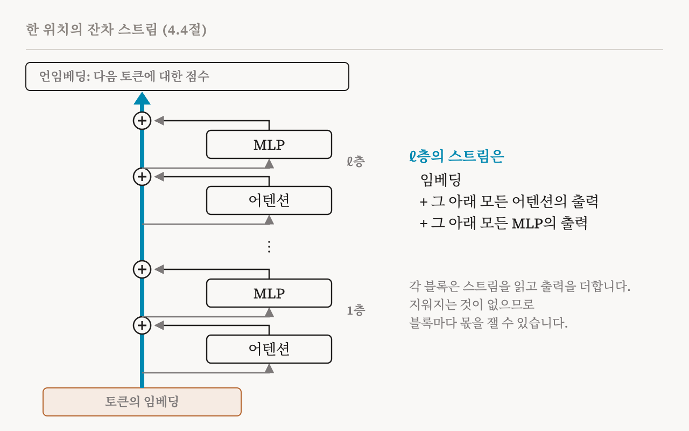
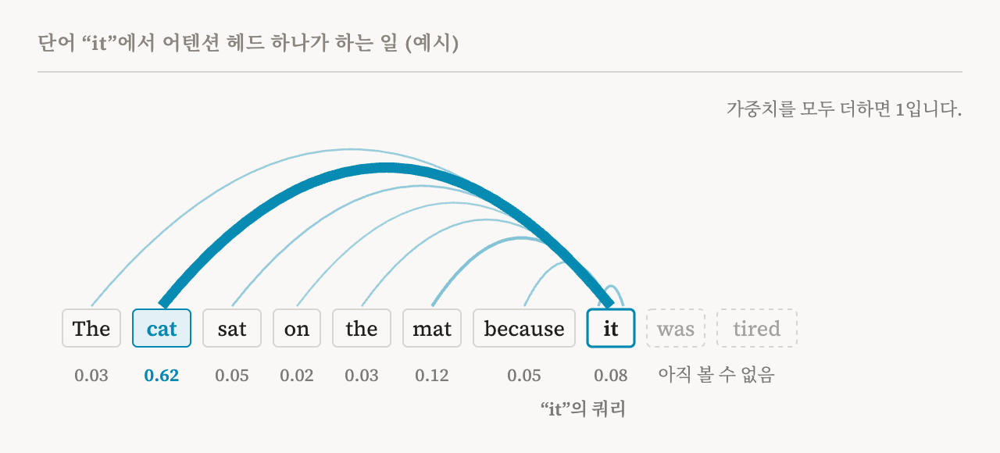
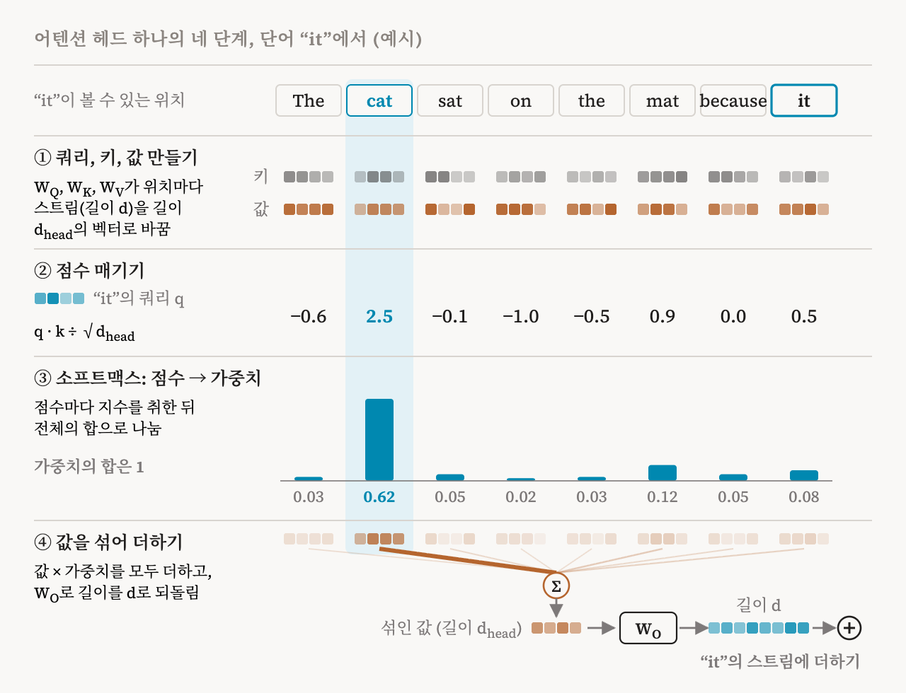
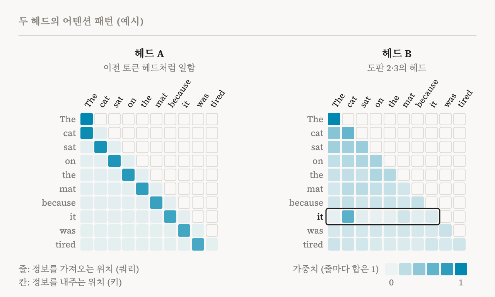

이 연재의 나머지 부분은 언어 모델 안의 뉴런, 특징, 어텐션 헤드, 회로를 이야기합니다. 이런 말들은 그것들이 어디에 있는지 떠올릴 수 있어야 비로소 의미가 생깁니다. 이번 편은 그 바탕을 마련합니다. 이 책의 4.4절(23–25쪽)을 따라가는데, 이 절은 짧고 수식으로 쓰여 있습니다. 여기서는 수식을 말로 풀고, 이 책이 당연하게 여기는 배경 설명을 곳곳에 덧붙입니다. 책에 없는 배경을 덧붙일 때는 그렇다고 밝힙니다.
왜 트랜스포머인가
2017년에 처음 나온 트랜스포머(transformer)는 ChatGPT나 Claude 같은 오늘날 AI 어시스턴트의 바탕이 되는 구조이고, 그래서 기계적 해석 가능성의 주된 연구 대상입니다. 이 책은 트랜스포머를 생각보다 연구하기 쉽게 만드는 두 가지 성질을 짚습니다. 서로 분리된 모듈로 이루어져 있다는 것, 그리고 그 안에서 정보가 덧셈으로 흐른다는 것입니다. 모델이 텍스트 한 조각으로 무엇을 하는지 따라가 보면 두 성질 모두 분명해집니다.
텍스트에서 벡터로, 다시 텍스트로 (배경 설명)
이 절은 이 책이 당연하게 여기는 배경 설명입니다.
언어 모델은 글자를 읽지 않습니다. 먼저 텍스트를 토큰(token)으로 나눕니다. 토큰은 단어 하나일 수도 있고 단어의 조각일 수도 있습니다. 그다음 각 토큰을 임베딩(embedding)으로 바꿉니다. 임베딩은 숫자의 긴 목록, 곧 벡터입니다. 그 길이는 모델마다 다른데, 오늘날의 큰 모델에서는 보통 수천 개입니다. 이 책은 이 길이를 은닉 크기(hidden size)라고 부르고 d로 씁니다. 따라서 토큰 T개짜리 문장은 위치마다 하나씩, 벡터 T개가 됩니다.
모델은 이 벡터들을 여러 층에 차례로 통과시킵니다. 층은 수십 개인 경우가 많습니다. 층마다 모든 위치의 벡터가 갱신됩니다. 맨 끝에서는 언임베딩(unembedding)이라는 마지막 단계가 마지막 위치의 벡터를 어휘에 있는 모든 토큰에 대한 점수로 바꾸고, 그 점수가 다음 토큰이 무엇일지에 대한 확률이 됩니다. 긴 답을 쓰는 것은 이 단계를 되풀이하는 것일 뿐입니다. 토큰 하나를 예측하고, 그것을 텍스트에 붙이고, 다시 예측합니다.
그러니 흥미로운 일은 모두 중간에서, 그 벡터들이 층을 거치며 갱신되는 동안 일어납니다. 이 책의 핵심 아이디어는 그 갱신이 어떻게 이루어지는지에 관한 것입니다.
잔차 스트림
각 위치의 벡터를, 층을 따라 위로 전해지는 공용 공책이라고 생각해 봅시다. 이 책은 이것을 잔차 스트림(residual stream)이라고 부릅니다. 층마다 두 종류의 구성 요소가 차례로 일합니다. 어텐션 모듈과 다층 퍼셉트론(multi-layer perceptron, MLP)입니다. 둘 다 지금의 공책을 읽고, 무언가를 계산한 다음, 그 결과를 공책에 더합니다. 이미 적혀 있는 것을 지우지는 않습니다.
이 책의 표기로는, 어떤 층에 들어오는 스트림을 h라고 할 때 어텐션 모듈이 먼저 자기 출력을 더하고, 이어서 MLP가 그 결과에 자기 출력을 더합니다. 풀어 쓰면, 어텐션을 거친 스트림은 h + Attention(h)이고, MLP를 거친 스트림은 그 합에 그것에 대한 MLP의 출력을 더한 것입니다.
이것을 모든 층에 걸쳐 되풀이하면 쓸모 있는 결론이 하나 나옵니다. 어느 층의 스트림이든, 처음의 임베딩에 그 아래의 모든 어텐션 모듈과 모든 MLP가 써 넣은 것을 전부 더한 값과 같다는 것입니다. 다시 떼어 낼 수 없는 방식으로 뒤섞인 것은 없습니다.

이 책이 잔차 스트림을 공유된 통신 채널이라고 부르는 이유가 여기에 있습니다. 멀리 떨어진 구성 요소들은 직접 대화하지 않지만, 3층의 구성 요소가 스트림에 써 넣은 것을 20층의 구성 요소가 읽을 수 있습니다. 또 스트림이 합이기 때문에, 연구자들은 '마지막 예측 가운데 얼마가 바로 이 어텐션 헤드에서 왔는가?' 같은 정밀한 질문을 던질 수 있습니다. 이 책은 이 관점이 기계적 해석 가능성의 중심에 있다고 말합니다. 모델의 계산을 개별 구성 요소들이 더한 몫으로 나누어 볼 수 있게 해 주기 때문입니다.
솔직히 짚어야 할 복잡한 점이 하나 있습니다. 실제 트랜스포머에는 층 정규화(layer normalisation)도 들어 있습니다. 스트림의 숫자들이 안정된 범위에 머물도록 크기를 다시 맞추는 단계입니다. 엄밀히 말하면 이 단계 때문에 깔끔한 합이 깨집니다. 이 책은 표준적인 논증을 따릅니다. 입력이 정해져 있으면, 층 정규화는 단순한 선형 변환에 크기 조정 계수 하나를 곱한 것과 거의 같게 작동합니다. 선형 변환 부분은 이웃한 가중치에 합쳐 넣을 수 있습니다. 크기 조정은 각 기여가 얼마나 크게 반영되는지만 바꿉니다. 그래서 스트림을 여전히 덧셈으로 이루어진 채널로 다룰 수 있고, 해석 가능성 연구 대부분이 실제로 그렇게 합니다.
두 종류의 일
어텐션 모듈과 MLP는 하는 일이 다르고, 그렇게 나뉘어 있기 때문에 연구자들은 둘을 따로 살펴볼 수 있습니다. 이 책에 따르면 어텐션 모듈은 주로 위치 사이에서 정보를 옮깁니다. 텍스트 곳곳의 정보를 이리저리 보내고, 모으고, 엮습니다. MLP는 주로 한 위치 안에서 일합니다. 이미 있는 특징을 변환하고, 많은 경우 사실 같은 저장된 지식을 꺼내 옵니다. 하나는 정보를 텍스트 위에서 옆으로 옮깁니다. 다른 하나는 그 자리에서 정보를 가공합니다.
어텐션: 다른 단어를 돌아보기
언어 모델은 단어들을 서로 이어야 합니다. "The cat sat on the mat because it was tired"에서 "it"을 이해하려면, 모델은 "cat"에 대한 정보를 "it"의 위치로 가져와야 합니다. 이 일을 하는 장치가 어텐션(attention)입니다.
어텐션 모듈은 나란히 일하는 여러 개의 어텐션 헤드(attention head)로 이루어집니다. 헤드 하나가 단어 "it"에서 하는 일을 결과만 놓고 보면 도판 2와 같습니다. "it"은 자기 자신과 앞선 단어들에서 정보를 조금씩 가져오는데, 그 가운데 "cat"에서 가장 많이 가져옵니다. 아래에서는 이 가중치가 어떻게 나오는지 네 단계로 나누어 따라갑니다. "it"의 위치 하나만 따라가지만, 같은 일이 모든 위치에서 동시에 일어납니다.

헤드 하나가 하는 일, 네 단계
이 책은 이 과정을 수식 몇 줄로 적습니다. 여기서는 그 수식을 단계별로 말로 풀고, 비유와 예, 그리고 원래의 트랜스포머 논문에 나오는 설명을 배경으로 덧붙입니다.
첫째, 헤드는 쿼리, 키, 값을 만듭니다. 헤드에는 학습된 행렬이 세 개 있습니다. 이 책은 이를 W_Q, W_K, W_V로 씁니다. 헤드는 모든 위치의 스트림에 이 세 행렬을 곱해 작은 벡터 세 개를 만듭니다. 쿼리(query)는 이 위치가 무엇을 찾고 있는지를 나타냅니다. 키(key)는 이 위치가 다른 위치에 무엇을 내놓을 수 있는지를 나타냅니다. 값(value)은 누군가 이 위치에 주의를 기울일 때 실제로 넘겨줄 내용입니다. 도서관에 빗대면, 쿼리는 검색창에 넣는 검색어, 키는 책마다 붙은 색인 카드, 값은 책의 내용에 해당합니다.
예를 들어 "it"의 쿼리는 '앞에 나온 명사 가운데 내가 가리킬 만한 것'을 찾는 내용을 담을 수 있습니다. "cat"의 키는 '나는 살아 있는 것을 가리키는 단수 명사'라는 내용을, "cat"의 값은 고양이에 관한 정보를 담을 수 있습니다. 다만 이런 이름표는 설명을 위해 붙인 것입니다. 실제로는 세 벡터 모두 숫자의 목록일 뿐이고, 그 숫자들이 무엇을 뜻할지는 학습이 정합니다. 세 벡터는 스트림보다 짧습니다. 이 책은 그 길이를 d_head로 씁니다. 원래의 트랜스포머에서는 스트림의 길이가 512, 헤드가 8개, 각 헤드의 d_head가 64였습니다. 큰 헤드 하나 대신 작은 헤드 여럿에 일을 나누는 셈입니다.
둘째, 헤드는 점수를 매깁니다. "it"의 쿼리를 각 위치의 키와 비교하는데, 이때 쓰는 계산이 내적(dot product)입니다. 두 벡터에서 같은 자리에 있는 숫자끼리 곱한 다음 모두 더하는 계산입니다. 두 벡터가 같은 쪽을 가리킬수록 내적이 커집니다. 그래서 쿼리가 찾는 것과 키가 내놓는 것이 잘 맞을수록 점수가 높습니다. 이 책의 수식은 이 내적을 d_head의 제곱근으로 나눕니다. 원래의 트랜스포머 논문은 그 이유를 이렇게 설명합니다. 벡터에 숫자가 많을수록 내적이 커지기 쉽습니다. 점수가 너무 크면, 다음 단계의 소프트맥스가 가중치를 거의 한 위치에 몰아주어 학습이 어려워집니다. 제곱근으로 나누면 점수가 알맞은 범위에 머뭅니다.
점수를 매길 수 있는 위치에는 제한이 있습니다. 언어 모델에서는 각 위치가 자기 자신과 앞선 위치들만 볼 수 있습니다. 뒤의 위치는 볼 수 없습니다. 모델은 다음 토큰을 보지 않고 예측해야 하기 때문입니다. 그래서 "it"은 자기 자신에게는 점수를 매기지만, 뒤에 오는 "was"와 "tired"에는 매기지 않습니다. (이 제한은 배경 설명입니다. 이 책의 일반적인 수식에는 나와 있지 않습니다.)
셋째, 소프트맥스(softmax)라는 함수가 점수를 가중치로 바꿉니다. 점수는 음수일 수도 있고, 합이 얼마가 될지도 정해져 있지 않습니다. 소프트맥스는 먼저 각 점수에 지수 함수를 적용해 모두 양수로 만듭니다. 그다음 그 값들을 전체의 합으로 나눕니다. 그래서 가중치는 모두 양수이고, 더하면 1이 됩니다. 지수 함수는 차이를 키웁니다. 점수가 1 높으면 가중치는 약 2.7배가 됩니다. 도판 3에서 "cat"과 두 번째로 높은 "mat"의 점수 차이는 2가 채 안 됩니다. 그런데도 "cat"의 가중치는 절반을 훌쩍 넘습니다.
넷째, 헤드는 값을 섞어 스트림에 더합니다. "it"의 위치는 각 위치의 값에 그 가중치를 곱한 다음 모두 더합니다. 가중치가 가장 큰 "cat"의 값이 이 혼합의 대부분을 차지합니다. 이 혼합은 아직 길이가 d_head인 짧은 벡터입니다. 출력 행렬 W_O가 이것을 스트림의 길이 d로 되돌리고, 그 결과가 "it" 위치의 스트림에 더해집니다. 이제 "it"의 스트림에는 "cat"에서 온 정보가 실려 있습니다. 그보다 위층의 구성 요소들은 이 정보를 읽을 수 있습니다.

어텐션 패턴과 여러 헤드
지금까지는 "it"의 위치 하나만 따라갔습니다. 실제로 헤드는 모든 위치에서 이 네 단계를 한꺼번에 처리합니다. 위치마다 가중치가 한 줄씩 나오므로, 이 줄들을 쌓으면 표가 됩니다. 가로줄은 정보를 가져오는 위치입니다. 세로줄은 정보를 내주는 위치입니다. 이 표가 그 헤드의 어텐션 패턴(attention pattern)입니다. 가로줄마다 합은 1입니다. 대각선의 오른쪽 위는 비어 있습니다. 앞선 위치만 볼 수 있기 때문입니다. 첫 단어의 가로줄에서는 볼 수 있는 위치가 자기 자신뿐이므로, 가중치 1이 한 칸에 모입니다.
헤드마다 W_Q, W_K, W_V, W_O가 따로 있습니다. 그래서 헤드마다 찾는 것과 옮기는 것이 다릅니다. 도판 4의 왼쪽 헤드는 거의 언제나 바로 앞 단어를 봅니다. 이런 헤드는 실제 모델에서도 흔히 발견되며, 이전 토큰 헤드(previous-token head)라고 부릅니다. 19편에서 다시 만납니다. 오른쪽 헤드는 도판 2와 3의 헤드입니다. 대부분의 위치에서는 가중치를 넓게 흩어 놓습니다. 그런데 "it"에서는 "cat"에 집중합니다. 여러 헤드가 나란히 일하므로, 한 층에서 여러 종류의 정보를 한꺼번에 옮길 수 있습니다. 모든 헤드의 출력을 더한 것이 어텐션 모듈의 출력입니다. 각 헤드의 출력이 따로따로 스트림에 더해지므로, 헤드 하나가 더한 몫만 떼어 내어 살펴볼 수도 있습니다.

이렇게 나누어 보면, 헤드 하나가 두 가지 질문에 따로 답한다는 것을 알 수 있습니다. 어디를 볼 것인가는 쿼리와 키, 곧 W_Q와 W_K가 정합니다. 무엇을 옮길 것인가는 값과 출력, 곧 W_V와 W_O가 정합니다. 해석 가능성 연구에서는 앞의 짝을 QK 회로, 뒤의 짝을 OV 회로라고 부릅니다. 이 구분은 이 책이 인용하는 2021년의 트랜스포머 회로 연구에서 나왔습니다(배경 설명). 이 책은 6편에서 다룰 회로의 예로 QK 회로를 듭니다. 두 짝은 서로 다른 행렬이므로, 같은 곳을 보는 두 헤드라도 옮기는 정보는 다를 수 있습니다.
어텐션 패턴은 도표로 나타내기 쉬워서, 연구자들이 가장 먼저 들여다본 것 가운데 하나였습니다. 1편에서 그런 도표가 모델의 결정을 설명하느냐를 두고 오랜 논쟁이 있었다고 했습니다. 더 안전하게 읽는 방법은 이렇습니다. 어텐션 패턴은 헤드가 정보를 어디서 가져오는지를 보여 줄 뿐, 그 정보가 무엇인지, 모델이 그것으로 무엇을 하는지는 보여 주지 않습니다. 앞의 이름으로 말하면, 어텐션 패턴은 QK 회로가 낸 결과일 뿐입니다. OV 회로가 무엇을 옮기는지는 그 표에 나타나지 않습니다.
MLP: 그 자리에서 생각하기
MLP 블록은 설명하기가 더 간단합니다. 각 위치에서 따로따로, 스트림에 행렬 W_1을 곱하고, 결과의 모든 숫자에 비선형 함수를 적용한 다음, 두 번째 행렬 W_2를 곱해 다시 스트림 크기로 돌아옵니다. 그 출력은 다른 모든 것과 마찬가지로 스트림에 더해집니다. 원래의 트랜스포머는 ReLU라는 함수를 썼습니다. 양수는 그대로 두고 음수는 0으로 바꾸는 함수입니다.
첫 번째 행렬은 스트림을 훨씬 큰 공간으로 펼칩니다. 이 책은 그 크기를 d_mlp로 쓰고, d보다 훨씬 크다고만 말합니다. 많은 모델에서는 d의 네 배쯤입니다. 그 큰 공간의 숫자 하나하나는, 비선형 함수를 거친 뒤 뉴런(neuron) 하나의 활성값이 됩니다. 해석 가능성 연구자들이 언어 모델의 뉴런을 이야기할 때는 대개 이것을 가리킵니다. 이 책은 최근 연구에서 이렇게 펼친 공간이 스트림 자체보다 해석하기 쉬운 표현을 준다는 결과가 나왔다고 전합니다. 뉴런 이야기, 그리고 뉴런이 왜 기대보다 읽기 어려웠는지는 5편에서 이어집니다.
MLP는 다른 위치를 볼 방법이 없으므로, MLP가 하는 일은 그 위치의 스트림에 이미 있는 것에만 달려 있습니다. 그래서 MLP는 특징을 변환하고, 지금까지 모인 정보와 연결된 사실을 꺼내 오기에 알맞은 자리입니다. 이 책은 MLP 층이 사실 지식의 저장소처럼 작동한다는 것을 발견한 연구들을 인용합니다.
오늘날의 변형들
이 책이 설명하는 것은 표준적인 트랜스포머이지만, 최근 모델들은 그 부품을 바꾼다고 덧붙입니다. 어텐션에는 Llama 3이 쓰는 그룹 쿼리 어텐션(grouped-query attention), DeepSeek-V2와 DeepSeek-V3가 쓰는 다중 헤드 잠재 어텐션(multi-head latent attention) 같은 변형이 있습니다. 둘 다 주로 어텐션을 더 적은 비용으로 돌리려는 방법입니다. MLP에는 Llama 3이 쓰는 SwiGLU 같은 게이트 방식의 변형과, DeepSeek-V3가 쓰는 전문가 혼합(mixture of experts) 구조가 있습니다. 전문가 혼합에서는 층마다 '전문가'라고 부르는 MLP가 여럿 있고, 작은 라우터가 토큰마다 그중 몇 개만 고릅니다. 그래서 한 번에 모델의 일부만 쓰입니다. 구성 요소들이 잔차 스트림에서 읽고 거기에 더한다는 핵심 구조는 그대로입니다.
이 구조가 연재의 나머지에서 중요한 이유
이번 편의 내용 가운데 세 가지가 앞으로 계속 다시 나옵니다. 첫째, 잔차 스트림은 d차원의 공간이고, 다음 편들은 개념이 그 안에 어떤 형태로 담기는지 묻습니다. 뉴런 하나에 담기는지, 방향으로 담기는지, 아니면 다른 무엇으로 담기는지입니다. 둘째, 스트림이 합이기 때문에 어떤 구성 요소의 기여든 따로 떼어 낼 수 있고, 뒤에 나올 개입들은 바로 이 덕분에 가능합니다. 셋째, 어텐션 헤드와 MLP는 회로를 이루는 벽돌입니다. 6편에서는 연구자들이 메커니즘을 이런 구성 요소들의 작은 그래프로 설명하는 방법을 봅니다. 19편에서는 가장 유명한 예를 다룹니다. 서로 다른 층에 있는 두 어텐션 헤드가 잔차 스트림을 통해 협력해서, 모델이 텍스트 앞부분에서 본 패턴을 이어 가게 만드는 메커니즘입니다.
| 용어 | 뜻 |
|---|---|
| 토큰 | 언어 모델이 읽고 쓰는 단위. 단어 하나이거나 단어의 조각 |
| 임베딩 | 첫 층에 들어가기 전에 토큰을 바꿔 놓은 숫자의 벡터 |
| 은닉 크기(d) | 잔차 스트림의 차원 수 |
| 언임베딩 | 마지막 벡터를 다음에 올 수 있는 모든 토큰에 대한 점수로 바꾸는 마지막 단계 |
| 잔차 스트림 | 모든 구성 요소가 읽고 자기 출력을 더하는, 위치마다 하나씩 있는 벡터 |
| 층 정규화 | 스트림의 크기를 다시 맞추는 단계. 대부분 이웃한 가중치에 합쳐 넣을 수 있음 |
| 어텐션 헤드 | 위치 사이에서 정보를 옮기는 구성 요소 |
| 쿼리, 키, 값 | 헤드가 위치마다 만드는 세 벡터. 찾는 것, 내놓는 것, 넘겨주는 것 |
| d_head | 헤드 하나가 만드는 쿼리, 키, 값 벡터의 길이 |
| 내적 | 같은 자리의 숫자끼리 곱해 모두 더한 값. 두 벡터가 같은 쪽을 가리킬수록 큼 |
| 어텐션 패턴 | 각 위치가 앞선 각 위치에서 얼마나 가져오는지 적은 가중치 표 |
| 소프트맥스 | 점수들을 합이 1인 양수 가중치로 바꾸는 함수 |
| 이전 토큰 헤드 | 바로 앞 위치를 보고, 그 토큰이 무엇인지를 지금 위치로 옮기는 헤드 |
| QK 회로 | W_Q와 W_K의 짝. 헤드가 어디를 볼지 정함 |
| OV 회로 | W_V와 W_O의 짝. 헤드가 무엇을 옮길지 정함 |
| MLP | 각 위치에서 따로 스트림을 변환하는 구성 요소 |
| 뉴런 | MLP가 펼친 은닉층의 단위 하나. 비선형 함수를 거친 값 |
| 전문가 혼합 | 층마다 MLP가 여럿 있고, 라우터가 토큰마다 그중 몇 개만 쓰는 구조 |
5편에서는 스트림의 숫자들이 무엇을 나타내는지 묻습니다. 뉴런, 개념, 그리고 이 책이 정의하는 '특징'입니다.